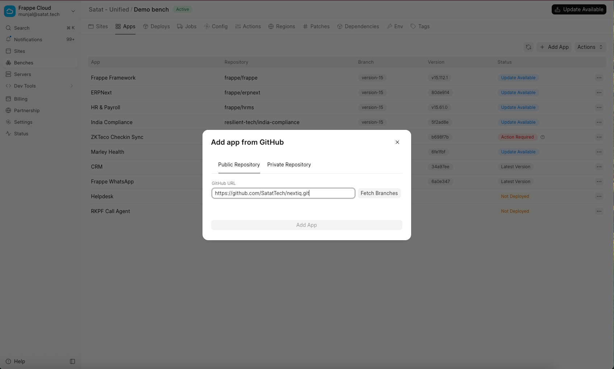
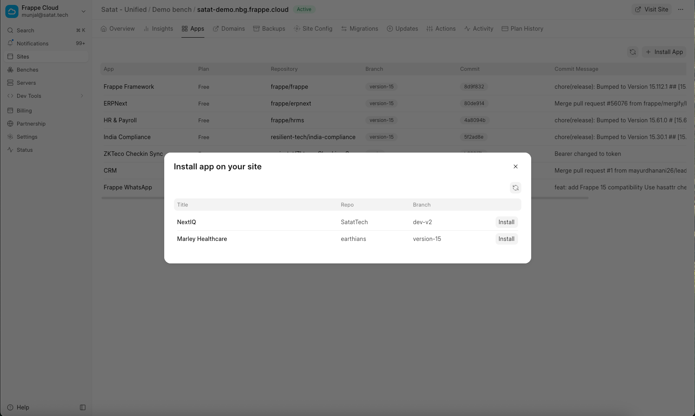
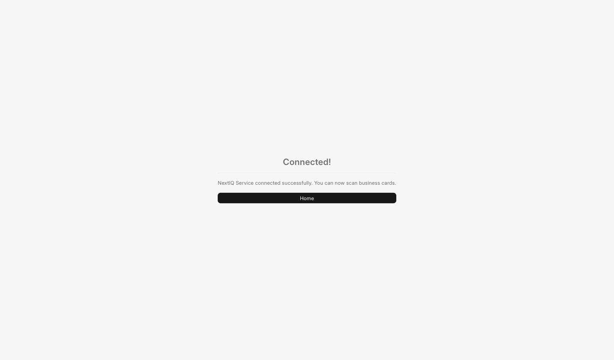

I use Frappe Cloud
Managed hosting through the Frappe Cloud dashboard.
Self-HostedI run my own bench
A bench on your own server, managed via the command line.
New customer setup
Six steps: sign up, install NextIQ on your Frappe Cloud site, and connect.
Sign up for your NextIQ account — skip if you already have one
Before connecting, create your account directly at nextiq.in/signup — fill in your name, email, and a password. Use the email you want scan notifications and quota alerts sent to. Already have a NextIQ account? Just make sure you're logged in and skip to Step 2.
Add the NextIQ app to your bench
Open your site's Bench from the dashboard, go to the Apps tab, select Add App, then Add from GitHub. Enter:
https://github.com/SatatTech/nextiq.git
Branch: main

Install NextIQ on your site
Once the app has finished being added to your bench, go back to your Site, open the Apps tab, select Install App, and choose NextIQ from the list.

Open NextIQ Settings
Back on your site, search for NextIQ Settings in the awesome bar (top search, press Ctrl/Cmd + K). You'll see a Connect to NextIQ Service button — select it. Since you're still logged in to NextIQ Service from the previous step, this connects instantly with no further sign-in prompt.

You're connected
You're automatically returned to your site with a Connected confirmation. A starter allowance of free scans is added to your account right away — no extra step needed.

Start scanning
Go to your site, open the NextIQ workspace, and select Scan Portal. Photograph a business card and submit it — NextIQ reads the card and creates a Lead for you automatically.
New customer setup
Six steps: sign up, get the app on your bench, and connect.
Sign up for your NextIQ account — skip if you already have one
Before connecting, create your account directly at nextiq.in/signup — fill in your name, email, and a password. Use the email you want scan notifications and quota alerts sent to.
Get the app
From your bench directory:
bench get-app https://github.com/SatatTech/nextiq.git --branch main
Install it on your site
bench --site your-site.com install-app nextiq bench --site your-site.com migrate
Restart the bench if it's running in production mode (bench restart).
Open NextIQ Settings
Log in to your site and search for NextIQ Settings in the awesome bar (Ctrl/Cmd + K). Select Connect to NextIQ Service. Since you're still logged in to NextIQ Service from Step 1, this connects instantly with no further sign-in prompt.
You're connected
You're returned to your site with a Connected confirmation. A starter allowance of free scans is added to your account right away — no extra step needed.
Start scanning
Go to your site, open the NextIQ workspace, and select Scan Portal. Photograph a business card and submit it — NextIQ reads the card and creates a Lead for you automatically.